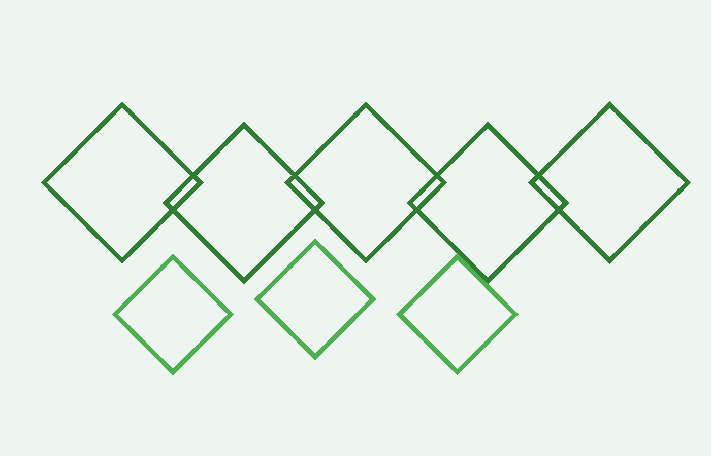

匿名実績
Selected Work (Anon.)

※ ブランド名は公開していません（NDA 締結後にご案内）。
* Brand names are disclosed under NDA only.
公開範囲を限定したサマリーです。詳しい資料は NDA 締結後に共有します。
Limited public summaries; full packs available under NDA.
※ ブランド名は公開していません（NDA 締結後にご案内）。
* Brand names are disclosed under NDA only.